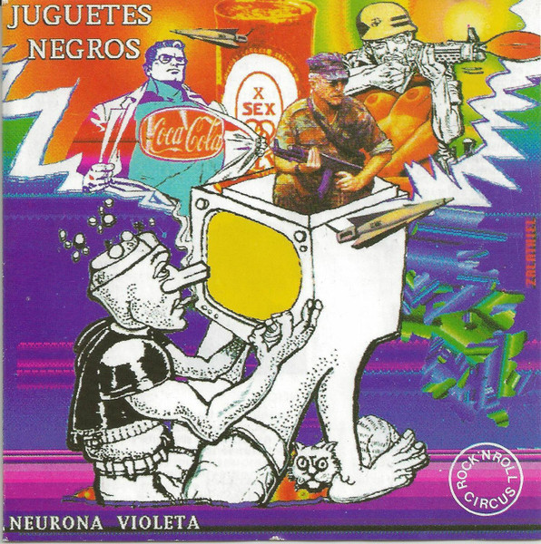
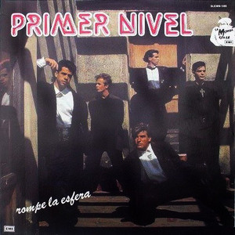
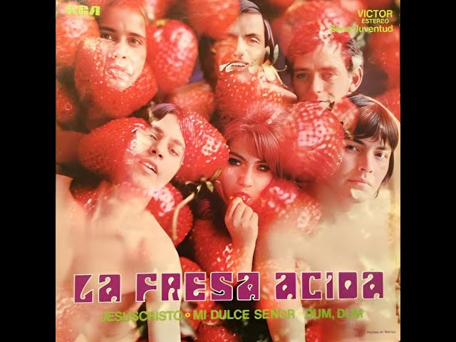
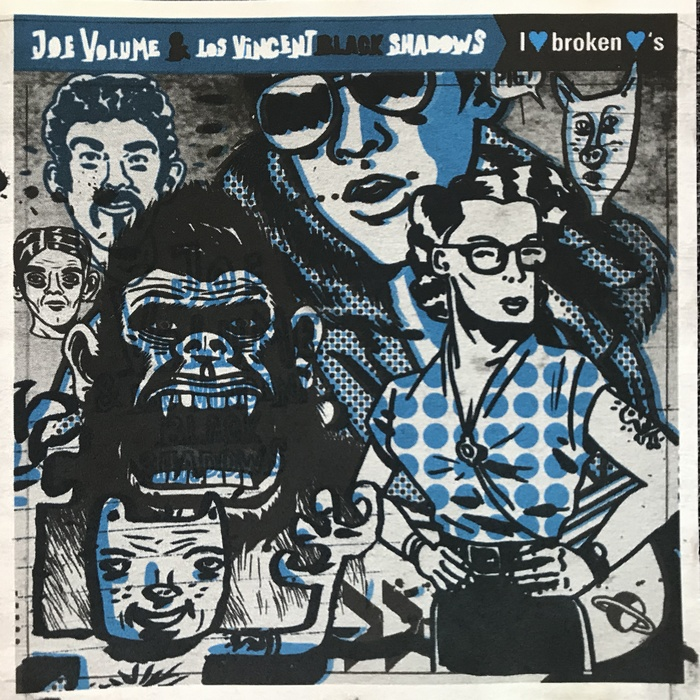
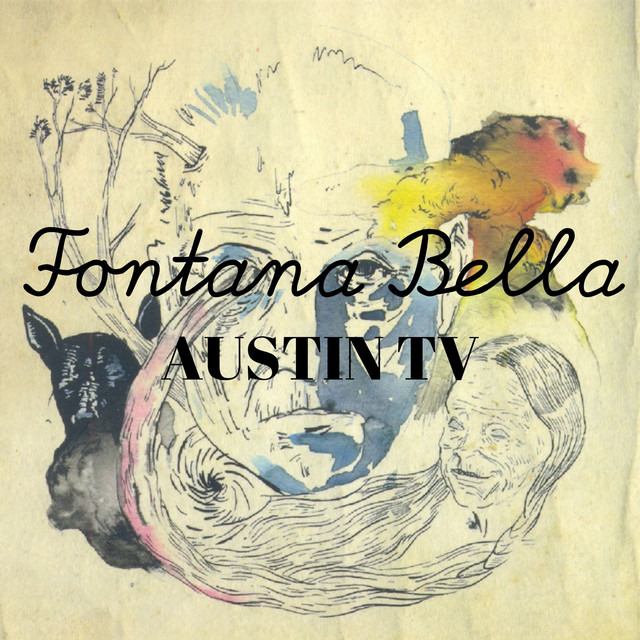

5 JOYAS DEL ROCK MEXICANO
QUE EL MAINSTREAM OLVIDÓ
En la historia oficial del rock mexicano, los nombres de siempre ocupan los capítulos principales. Pero en las notas al pie de página, en los casetes grabados de contrabando y en los prensajes limitados de sellos independientes, descansa el verdadero ADN de nuestra vanguardia.
Esta no es una lista de éxitos; es un mapa de tesoros para quienes buscan el sonido crudo, el post-rock místico y la psicodelia que sobrevivió al olvido.
1. NEURONA VIOLETA – JUGUETES NEGROS

Publicado bajo el mítico sello Rock and Roll Circus, este disco es una pieza de arqueología pura. Con una producción rústica que solo acentúa su honestidad, Neurona Violeta entregó en Juguetes Negros una atmósfera cargada de melancolía y distorsión. La voz de Ramiro, su vocalista, navegaba entre el susurro y el grito, creando un puente perfecto para quienes sentían que el rock nacional se estaba volviendo demasiado "amigable". Un disco que suena a la Ciudad de México antes de la gentrificación.
2. PRIMER NIVEL – ROMPE LA ESFERA

Mientras la mayoría de las bandas buscaban el sonido de bar, Primer Nivel apostó por una producción de altos vuelos. Rompe La Esfera es un ejercicio de elegancia sonora que hoy se siente extrañamente fresco. Temas como "La fiesta infinita" muestran un dominio de las texturas sintéticas y las guitarras limpias que pocas bandas de la época lograron. Es el disco ideal para entender que el rock mexicano de los 80 también sabía ser pulcro y vanguardista.
3. LA FRESA ÁCIDA – SESIONES DE PSICODELIA

Si buscas el "Santo Grial" de la psicodelia nacional, es este. La Fresa Ácida representa ese momento místico post-Avándaro donde el rock se volvió una cuestión de resistencia cultural. Con órganos Hammond hipnóticos y ritmos que invitan al trance, piezas como "La Fiesta Hippie" son documentos históricos de una generación que buscaba expandir la conciencia a través del ruido. Escucharlos hoy es como encontrar una fotografía en sepia que de pronto cobra color.
4. JOE VOLUME & LOS VINCENT BLACK SHADOWS

A mediados de los 2000, mientras el indie se volvía cada vez más suave, Joe Volume apareció para recordarnos que el rock debe ser peligroso. Este álbum es una explosión de energía garajera, letras viscerales y una urgencia que parece que el disco va a incendiarse mientras gira. Es crudo, es ruidoso y es, posiblemente, uno de los discos más honestos de la escena independiente de la CDMX en este siglo.
5. AUSTIN TV – FONTANA BELLA

Aunque Austin TV logró una popularidad notable, Fontana Bella se mantiene como su joya de la corona por su complejidad. Es un disco instrumental que no necesita palabras para contarte una historia de terror, soledad y esperanza en un bosque místico. Cada pista es una capa de sonido meticulosamente construida. Es esencial para cualquier persona que crea que el rock en México no se atrevía a experimentar con estructuras cinematográficas.